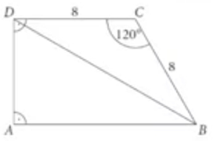

Zadania zamknięte
-
Jeśli \(a=\frac{2}{3}\) i \(b=\frac{3}{2}\), to wartość wyrażenia \(\frac{a+2b}{a-2b}\) jest równa
A \(-1\)B \(-\frac{11}{7}\)C \(-3\)D \(-\frac{77}{9}\) -
Liczba \(\frac{6^{2022}\cdot 2^{2022}}{12^{2021}}\) jest równa
A \(1\)B \(2\)C \(\)12D \(12^{2023}\) -
W firmie \(XYZ\) \(48\%\) pracowników zna język angielski, a spośród nich \(8\%\) zdało egzamin państwowy z tego języka i posiada międzynarodowy certyfikat językowy. Wynik stąd, że najmniejsza możliwa liczba pracowników firmy to
A \(100\)B \(250\)C \(625\)D \(1255\) -
Liczba \(\frac{7\sqrt{2}}{1-2\sqrt{2}}\) jest równa
A \(-7\)B \(-\frac{14}{3}\)C \(4-\sqrt{2}\)D \(-4-\sqrt{2}\) -
Liczba \(log_212-log_23+log_21\) jest równa
A \(136\)B \(log_210\)C \(3\)D \(2\) -
Dla dowolnych liczb \(x\) i \(y\) wyrażenie \((2x-y)^2-(x+2y)^2\) jest równe
A \(4x^2+4y^2\)B \(3x^2-3y^2\)C \(3x^2-8xy-3y^2\)D \(4x^2-8xy+4y^2\) -
Proste o równaniach \(y=x+4\) i \(y=-2x+m+1\) przecinają się w punkcie, którego obie współrzędne są dodatnie. Wynika stąd, że \(m\) należy do przedziału
A \((-\infty,-3)\)B \(<-3,0)\)C \((0,3>\)D \((3,+\infty)\) -
Najmniejszą liczbą całkowitą spełniającą nierówność \(3(x-4)\leq5(x-6)+29\) jest
A \(-6\)B \(-5\)C \(-3\)D \(-2\) -
Liczba wszystkich dodatnich dzielników liczby \(60\) jest równa
A \(12\)B \(11\)C \(10\)D \(9\) -
Funkcja \(f\) jest określona wzorem \(f(x)=\frac{x^2-x-3}{x^2-9}\) dla wszystkich liczb rzeczywistych różnych od \(3\) i \(-3\). Wartość funkcji \(f(-\sqrt{3}\) jest równa
A \(-\frac{\sqrt{3}}{6}\)B \(-\frac{\sqrt{3}+2}{8}\)C \(\frac{6-\sqrt{3}}{12}\)D \(\frac{6+\sqrt{3}}{12}\) -
Funkcja kwadratowa \(f\) określona jest wzorem \(f(x)=-3(x-2)^2-5\). Funkcja \(f\) ma
A najmniejszą wartość równą \(-5\)B największą wartość równą \(-5\)C najmniejszą wartość równą \(5\)D największą wartość równą \(5\) -
Dwa boki trójkąta zawierają się w osiach układu współrzędnych, a trzeci jest zawarty w prostej o równaniu \(y=2x-6\). Pole tego trójkąta wynosi
A \(3\)B \(6\)C \(9\)D \(18\) -
Jeśli jedynym miejscem zerowym funkcji kwadratowej \(f(x)=a(x-p)^2+q\) jest liczba \(4\), to wierzchołek paraboli będącej wykresem funkcji \(f\) ma współrzędne
a \((0,4)\)b \((4,0)\)c \((0,2)\)d \((2,0)\) -
Wszystkich liczb naturalnych dwucyfrowych podzielnych przez \(3\) i mniejszych od \(77\) jest
a \(20\)b \(21\)c \(22\)d \(23\) -
Ciąg \((4x, 3x+6, 9x)\) jest geometryczny i rosnący. Jego iloraz jest równy
a \(-\frac{3}{2}\)b \(-\frac{2}{3}\)c \(\frac{3}{2}\)d \(2\) -
Jeśli kąt \(\alpha\) jest ostry, a \(cos\alpha=\frac{1}{4}\), to
a \(sin\alpha=\frac{3}{4}\)b \(sin\alpha=\frac{\sqrt{15}}{4}\)c \(sin\alpha=\frac{15}{16}\)d \(sin\alpha=\frac{\sqrt{15}}{16}\) -
W trójkącie prostokątnym sinus jednego z kątów ostrych jest równy \(\frac{8}{17}\), a przeciwprostokątna ma długość \(34\). Dłuższa z przyprostokątnych tego trójkąta ma długość równą
a \(15\)b \(16\)c \(24\)d \(30\) -
Pole równoległoboku o bokach długości \(6\) i \(8\) oraz kącie rozwartym o mierze \(150^\circ\) wynosi
a \(9\sqrt{3}\)b \(12\)c \(12\sqrt{3}\)d \(24\) -
Puknty \(A, B, C, D, E\), leżące na okręgu o środku \(S\), są wierzchołkami pięciokąta, którego wszystkie boki mają jednakowe długości. Punkt \(P\) leży na krótszym łuku \(CD\) (jak na rysunku)
Miara \(\alpha\) kąta \(APE\) wynosi
a \(30^\circ\)b \(36^\circ\)c \(38^\circ\)d \(45^\circ\) -
Na rysunku przedstawiono wycinek koła o kącie środkowym \(120^\circ\) i polu równym \(12\pi\).
Obwód tego koła jest równy
a \(36\pi\)b \(12\pi\)c \(6\pi\)d \(4\pi\) -
Przez punkty \(A=(-2,5)\) i \(B=(4,9)\) poprowadzono prostą. Współczynnik kierunkowy tej prostej jest równy
a \(a=\frac{2}{3}\)b \(a=-\frac{2}{3}\)c \(a=\frac{3}{2}\)d \(a=-\frac{3}{2}\) -
Odcinek o końcach \(A=(1,3)\) i \(B=(5,11)\) jest zawarty w prostej o równaniu \(y=2x+1\). Symetralna odcinka ma równanie
a \(y=-2x-13\)b \(y=-2x+5\)c \(y=-\frac{1}{2}x+\frac{17}{2}\)d \(y=-\frac{1}{2}x+\frac{7}{2}\) -
Wykresy funkcji liniowych \(f\) i \(g\), określonych wzorami \(f(x)=ax+b\) i \(g(x)=bx-a\), przecinają się w punkcie \(M=(3,5)\). Zatem
a \(a=\frac{6}{13}, b=\frac{9}{13}\)b \(a=5, b=10\)c \(a=\frac{5}{3}, b=\frac{10}{3}\)d \(a=1, b=2\) -
Krawędź podstawy graniastosłupa prawidłowego czworokątnego ma długość \(2\sqrt{2}\), a jego przekątne są prostopadłe (jak na rysunku).
Objętość tego graniastosłupa jest równa
a \(32\)b \(24\)c \(16\sqrt{2}\)d \(8\sqrt{2}\) -
Klasę \(3c\) w pewnej szkole tworzy \(12\) chłopców i pewna liczba dziewcząt. Prawdopodobieństwo, że osoba wybrana losowoz tej klasy jest dziewczyną, wynosi \(\frac{2}{5}\). Wynika stąd, że liczba osób w tej klasie jest równa
a \(20\)b \(24\)c \(25\)d \(30\)
Zadania otwarte
-
Rozwiąż nierówność \(x(2x-1)+4>8x\)
-
Liczba \(4\) jest pierwszym wyrazem pewnego ciągu arytmetycznego. Drugi wyraz tego ciągu jest równy \(x+4\), a suma trzech jego początkowych wyrazów wynosi \(16\frac{1}{2}\). Oblicz różnicę tego ciągu.
-
W urnie znajdują się jedynie kule białe i czarne. Prawdopodobieństwo zdarzenia polegającego na tym, że losowo wybrana kula z tej urny będzie biała, jest równe \(\frac{1}{3}\). Jeżeli do urny dołożymy jedną kulę białą, to prawdopodobieństwo wylosowania kuli białej zwiększy się o \(\frac{1}{51}\). Ustal liczbę kul w tej urnie przed dołożeniem dodatkowej kuli białej.
-
Wykaż, że dla dowolnej liczby naturalnej \(n\geq 1\) liczba \(64^n-4^n\) jest podzielna przez \(12\).
-
Dany jest sześcian \(ABCDEFGH\). Odcinek łączący wierzchołek \(H\) ze środkiem krawędzi \(BC\) ma długość \(|HP|=4\) (jak na rysunku).
Oblicz objętość tego sześcianu.
-
Liczba \(4\) jest jednym z miejsc zerowych funkcji kwadratowej \(f\), a ponadto \(f(0)=f(12)=2\). Wyznacz najmniejszą wartość funkcji \(f\).
-
Ramię \(AD\) trapezu \(ABCD\) o podstawach \(AB\) i \(CD\) jest zarazem wysokością tego trapezu. Podstawa \(CD\) i ramię \(BC\) mają długości równe \(8\), a kąt między tymi bokami jest równy \(120^\circ\) (jak na rysunku).
Oblicz pole trapezu \(ABCD\) oraz długość przekątnej \(BD\).